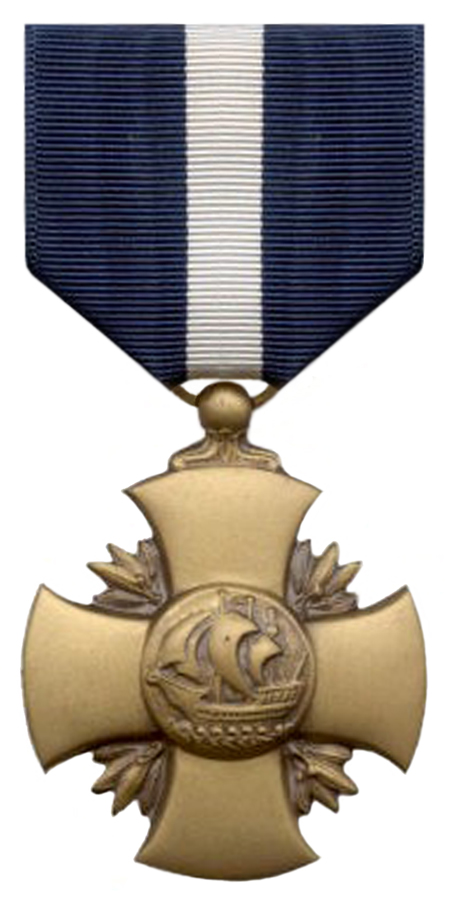

Navy Cross Citations

This page lists the Navy Cross Citations for those men who served in Alpha Company 3rd Reconnaissance Battalion during the Vietnam War. The citations are listed in alphabetical order.
Corporal Bryant C. Collins
For extraordinary heroism as a scout team leader in Company A, Third Reconnaissance Battalion, Third Marine Division (Forward), Fleet Marine Force, on 12 July 1965. Deep in Viet Cong insurgent territory on a reconnaissance patrol, Corporal Collins, in the company of another Marine, was serving as point man when the patrol became heavily engaged with enemy forces firing machine guns and automatic weapons from concealed positions. In the opening moments he brought fire to bear and killed three enemy soldiers, then withdrew to the advance party, which consisted of the company commander and three men, two of whom were wounded. In an open field being swept by a hail of small arms fire, the company commander was struck and killed as he was attempting to aid one of the wounded men. Corporal Collins immediately took charge of the situation, and coolly exposing himself to extremely heavy fire, manned an M79 grenade launcher and silenced an enemy machine gun. He bandaged one wounded man and laid down covering fire to enable him to crawl out of range. After having recovered the commander's body, he again advanced to the fire-swept field and carried the remaining wounded man toward cover until met by assistance. He then organized the party and ordered their return to the main body located 100 yards to the rear. He personally carried his dead commander back to the main line through heavy fire received from the flanks. His heroic actions and brave demeanor served as an inspiration to all who observed him and contributed to the successful withdrawal of the other members of the patrol. By his superb leadership and valiant fighting spirit, Corporal Collins reflected distinct credit upon himself and the Marine Corps and upheld the finest traditions of the United States Naval Service.
Lance Corporal Manuel A. Estrada
For extraordinary heroism while serving as a Squad Leader with Company A, Third Reconnaissance Battalion, Third Marine Division in the Republic of Vietnam, on 24 and 25 August 1968. Lance Corporal Estrada and his eight-man reconnaissance team were helilifted into enemy controlled territory near Con Thien and were proceeding across an open rice paddy when the point man encountered twelve North Vietnamese Army soldiers followed by a force estimated to be battalion size. Reacting instantly, the point man fired his weapon and killed three of the enemy. While the surprised North Vietnamese unit recovered from its momentary confusion, Lance Corporal Estrada rapidly deployed his men and adjusted supporting arms fire which, in coordination with fire of his team, successfully held the determined North Vietnamese unit at bay. As a reaction force, sent to the relief of the beleaguered team, disembarked in a nearby landing zone, it was pinned down by a heavy volume of enemy mortar and automatic weapons fire and suffered several casualties. Skillfully shifting supporting artillery fire and the direction of his team's firepower, he enable the relief force to join his team, and when the officer leading the infantrymen was severely wounded, Lance Corporal Estrada unhesitatingly assumed command of the combined forces, although he had been seriously injured during the early moments of the engagement. With the arrival of helicopters containing further reinforcements, he boldly stood in the hazardous area and utilized a strobe light to guide the aircraft to a landing. Relieved by an officer accompanying the new unit, Lance Corporal Estrada, twice, steadfastly refused medical evacuation and, ignoring his painful injury, crawled from one position to another, distributing ammunition and water and encouraging the men in their efforts to contain the enemy assault. Resolutely remaining with his team, he assisted in repulsing repeated attacks until the reconnaissance team was extracted the following day. By his courage, resolute determination and unfaltering devotion to duty he upheld the highest traditions of the Marine Corps and the United States Naval Service.
Corporal Steven D. Lopez
For extraordinary heroism while serving as a Radio Operator with the First Platoon, Company A, Third Reconnaissance Battalion, Third Marine Division (Reinforced) near Khe Sanh, Republic of Vietnam, on 9 and 10 May 1967. Corporal (then Private First Class) Lopez was a member of a seven man reconnaissance patrol deep in enemy controlled territory. The patrol discovered numerous enemy bunkers and equipment and radioed the valuable intelligence information back. Towards evening they withdrew to high ground and established a night defense. Shortly after midnight, a North Vietnamese unit of approximately 50 men was heard moving toward their position. Several enemy troops walked into their position and started to unsling their weapons and Corporal Lopez quickly killed them with an accurate burst of automatic weapons fire. The enemy immediately began delivering a heavy volume of small arms fire into their perimeter. As the fire fight continued, numerous casualties were inflicted until only Corporal Lopez, who was wounded in the side, and another Marine were able to deliver fire on the enemy. Although wounded, he assumed the task of directing artillery on enemy positions around the patrol. Armed helicopters and flare ships arrived to add support to the besieged patrol. Wounded a second time, he still courageously directed supporting arms in dangerously close to his position as, on several occasions, the enemy was within 15 feet of his position. Two attempts to extract the patrol by helicopter failed, due to the intense enemy fire. Running low on ammunition, he moved among the bodies of his fallen comrades to retrieve ammunition and discovered one Marine seriously wounded. He moved him to a covered position and distributed the ammunition between himself and the other survivor. He once again called in air support so close that dirt from the exploding rockets and bombs showered them and was once again wounded when an enemy round grazed his head. A last desperate attempt was made for extraction by helicopter. Napalm, bombs, and rockets rocked the enemy's position as the three remaining members of the patrol were extracted. His steadfast determination and indomitable fighting spirit throughout the twelve hour ordeal were instrumental in inflicting numerous casualties on the enemy and saving the lives of several Marines. By his outstanding courage, bold initiative and selfless devotion to duty in the face of grave personal danger, Corporal Lopez upheld the highest traditions of the Marine Corps and the United States Naval Service.
Corporal Roger D. See
For extraordinary heroism in action as a Patrol Leader with Company A, Third Reconnaissance Battalion, Third Marine Division during combat operations against the enemy in the Republic of Vietnam. On 8 June 1969, while his six-man reconnaissance team was establishing an observation post, Corporal See observed two enemy soldiers in proximity to the Marines and took them under fire. During the exchange of fire both enemy soldiers were wounded, one of whom was captured by Corporal See. With the enemy force now in close pursuit, Corporal See picked up the wounded prisoner and began carrying him to the helicopter extraction site. During this action, he was wounded in the thigh, but managed to regain his feet and continue toward the extraction site. When another Marine coming to his assistance was seriously wounded, Corporal See remained in a dangerously exposed position to treat his companion's wounds and to administer mouth-to-mouth resuscitation in a futile effort to save the man's life. After his comrade succumbed to his wounds, Corporal See seized the grenade launcher the Marine had been carrying and delivered covering fire for his men. When he had expended all the grenades, he utilized his rifle and a weapon dropped by an enemy soldier until he had fired every round available, and then painfully maneuvered to join his team on the hill. As the unit attempted to attain the crest, the Marines were subjected to intense fire from a bunker position. Corporal See crawled across an exposed area and silenced the fire by dropping a fragmentation grenade through an aperture at the top of the position. When an extraction helicopter arrived on station and approached for a landing, intensified fire from hostile positions around the hill forced the pilot to lift off. Until the early morning hours of the following day when a successful extraction became possible, Corporal See, despite the pain of his wound, continually patrolled the defensive perimeter to encourage his men, ascertain their welfare and direct their fire. By his courage, valiant leadership, and unfaltering devotion to duty in the face of seemingly overwhelming odds, he contributed significantly to the accomplishment of his unit's intelligence mission and upheld the highest traditions of the Marine Corps and the United States Naval Service.
Sergeant James N. Tycz
For extraordinary heroism while serving with the First Platoon, Company A, Third Reconnaissance Battalion, near Khe Sanh in the Republic of Vietnam on 9 May 1967. Sergeant Tycz was the patrol leader of a seven-man reconnaissance patrol deep in enemy-controlled territory. Shortly after midnight a North Vietnamese Army unit, estimated to be about 30 - 50 men, was heard moving toward the patrol's position. Sergeant Tycz cautioned his men to remain silent so as not be detected; however, several of the enemy troops walked into the patrol's position and started to unsling their weapons after sighting the patrol. One of the Marines quickly took two of the enemy under fire, killing them instantly. Alerted to their location, the enemy immediately began delivering a heavy volume of small-arms fire into the patrol's perimeter. One patrol member was killed instantly and another wounded. Sergeant Tycz quickly deployed the remainder of his patrol and fearlessly moved among his men directing fire and shouting words of encouragement despite the heavy volume of enemy fire being poured into his perimeter. Within a few minutes the assistant patrol leader was seriously wounded, as was the corpsman attached to the patrol and the second radio operator. Sergeant Tycz moved to a radio and began calling in artillery fire on the enemy positions. When an armed enemy hand grenade landed near one of the seriously wounded Marines, Sergeant Tycz courageously and with complete disregard for his own personal safety moved forward, picked up the grenade and attempted to throw it back at the enemy. The grenade exploded after traveling only a short distance, and he fell, critically wounded. Throughout the encounter, Sergeant Tycz set an example of calmness and coolness under fire that was an inspiration to the remainder of his patrol. By his unselfish act of courage, he risked his life to save his comrades from injury and possible loss of life and thereby upheld the highest traditions of the Marine Corps and the United States Naval Service.